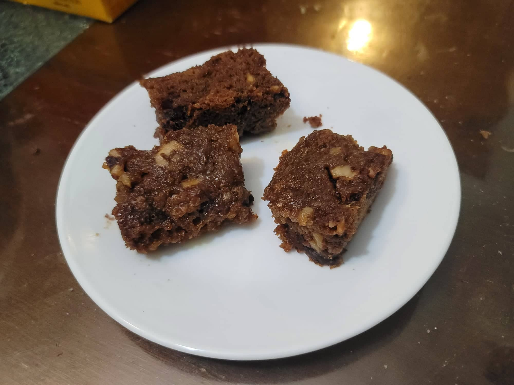

Food for the Gods

Ingredients:
- 1 1/4 cup Flour
- 1 cup Butter
- 1 cup Sugar
- 1 cup Brown Sugar
- 3 Eggs
- 1/2 tsp Baking powder
- 1/2 tsp Baking soda
- 1/4 tsp Salt
- 1 cup Dates, chopped
- 1 cup Walnuts, chopped
Instructions:
- Preheat the oven the 350 degrees Fahrenheit.
- Combine the butter and sugars into a large bowl. Cream with an electric mixer. Then add in the eggs and beat again with the electric mixer.
- Combine the flour, baking powder, baking soda, and salt into a separate bowl. Mix well.
- Slowly add in the dry ingredients to the wet ingredients while mixing with the electric mixer until completely mixed.
- Fold in the chopped walnuts and dates with a rubber spatula.
- Grease a 9x13 baking dish. Pour in the batter and flatten. Bake for 10 minutes on 350 degrees Fahrenheit, and then reduce the heat to 300 degrees Fahrenheit and bake for 30-40 more minutes. Remove from the oven and let cool before cutting and serving.